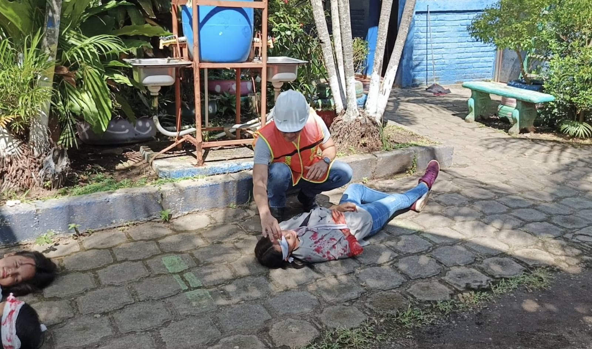
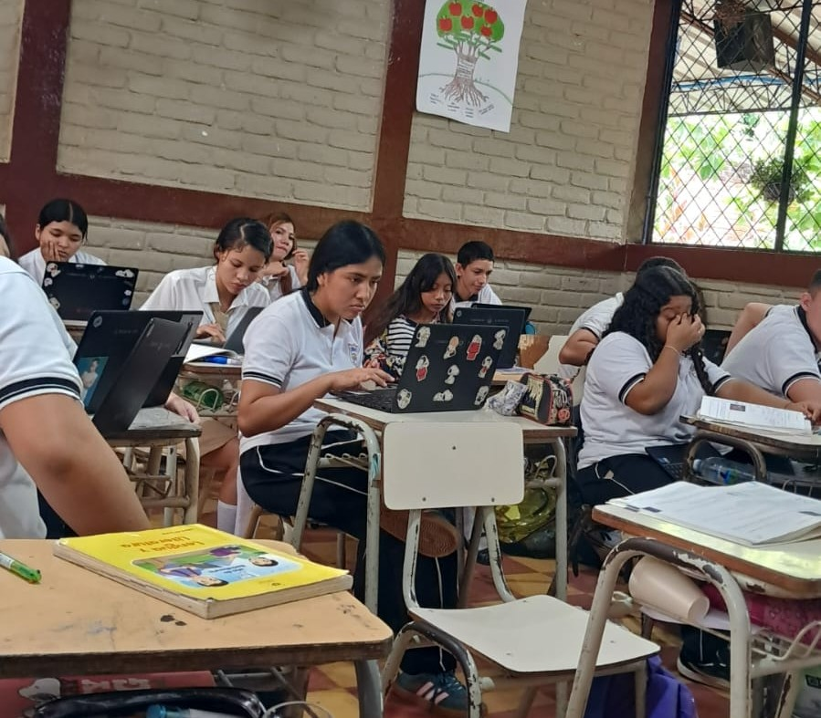
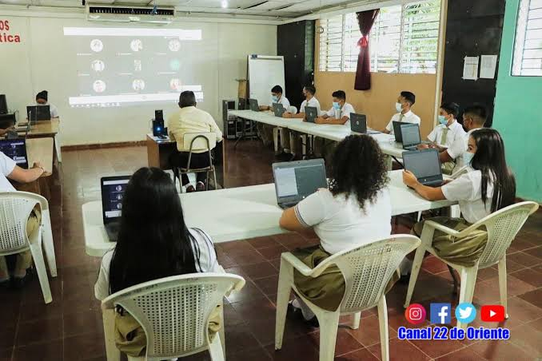

ORGANIZA TU CICLO
Calendarios
EVENTO IMPORTANTE
Prueba Avanzo
La prueba Avanzo se realizará los días 28 y 29 de octubre para los estudiantes de segundo año de bachillerato.
El 28 de agosto se realizó la elección y coronación de la reina y la princesa de independencia.


El 14 de octubre se realizó un simulacro escolar para preparar a los estudiantes ante cualquier emergencia.



ORGANIZA TU CICLO
EVENTO IMPORTANTE
La prueba Avanzo se realizará los días 28 y 29 de octubre para los estudiantes de segundo año de bachillerato.
CONTÁCTANOS
Teléfono: 2628-0241
Correo Electrónico: 12524@clases.edu.sv
Facebook: www.facebook.com/INEFOFICIAL
WhatsApp: 7260-3747
CONOCE TUS OPCIONES
Aquí encontrarás todas las opciones de estudio disponibles que ofrece nuestra institución.
Esta modalidad ofrece una formación amplia en ciencias, humanidades y tecnología. El plan de estudios desarrolla conocimientos, métodos y habilidades que ayudan a construir nuevos aprendizajes y a continuar estudios superiores.
Duración: 2 años


El Bachillerato Técnico Vocacional Administrativo Contable es una opción de nivel medio en la que adquirirás conocimientos sobre sistemas de control interno, contabilidad y administración de los distintos sectores que conforman la economía. También aprenderás sobre productos de exportación y desarrollarás actividades propias de la profesión, que te permitirán desempeñarte de forma autónoma. Podrás trabajar en ventas, administración, contabilidad, caja, planillas, inventarios, centros de atención telefónica, publicidad y control de bodegas, entre otras áreas.
Duración: 3 años


En el Bachillerato en Desarrollo de Software podrás desenvolverte en los siguientes campos: venta de soluciones de software, mantenimiento y soporte de aplicaciones, capacitación para el desarrollo de software y control de calidad en pruebas de aplicaciones. Además, podrás desarrollar aplicaciones y páginas web, diseñar gráficos y utilizar impresoras 3D, entre otras actividades.
Duración: 3 años


Ofrece al estudiante conocimientos agropecuarios en diferentes ámbitos: cunicultura, avicultura, porcicultura, apicultura, cultivos ornamentales, preparación de suelos, manejo de cultivos agroindustriales, almacenamiento y procesamiento de cultivos perennes, diseño y ejecución de proyectos, manejo de equipos y maquinaria agroindustrial, frutales, viveros, huertos y procesamiento de alimentos. Además, se incentiva el uso de la tecnología.
Duración: 3 años


NUESTRO PROPÓSITO
Somos un centro educativo líder en la investigación, profesionalización y ejecución de proyectos, basado en la planificación por competencias, para mejorar su entorno ambiental, calidad, capacidad crítica y reflexiva, y transformar la sociedad, logrando una excelencia académica, calidad humana y la preparación para la vida.
HACIA DÓNDE VAMOS
Ser un centro educativo líder, con una organización eficiente, un ambiente agradable, tecnología innovadora y alto rendimiento académico; con una actitud disciplinaria ejemplar y competencias en investigación, profesionalización y ejecución de proyectos funcionales.
LO QUE NOS GUÍA
LO QUE NOS DISTINGUE
NOTICIA 1
El día 28 de agosto se realizó el evento de elección de la reina y princesa de los estudiantes.
NOTICIA 2
El día 14 de octubre se llevó a cabo el simulacro escolar para preparar a los estudiantes por si ocurre algún evento de emergencia.
NOTICIA 3
Los días 28 y 29 de octubre se realizó la prueba Avanzo para los estudiantes de segundo año de bachillerato.
NOTICIA 4
El 9 de noviembre comenzarán los exámenes del cuarto período.